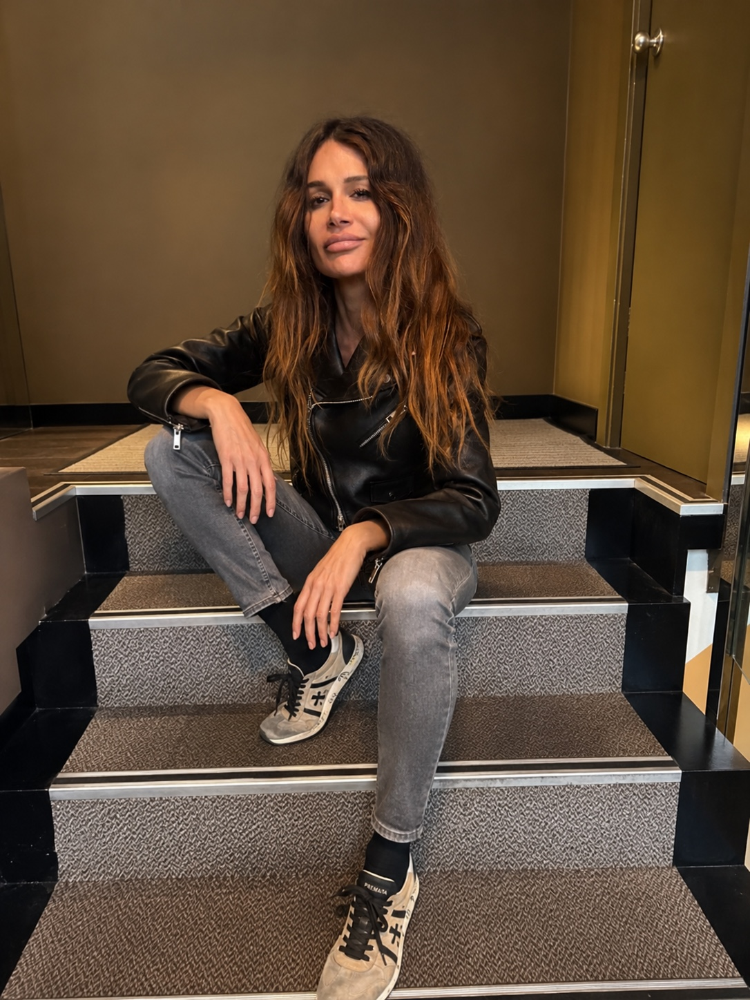
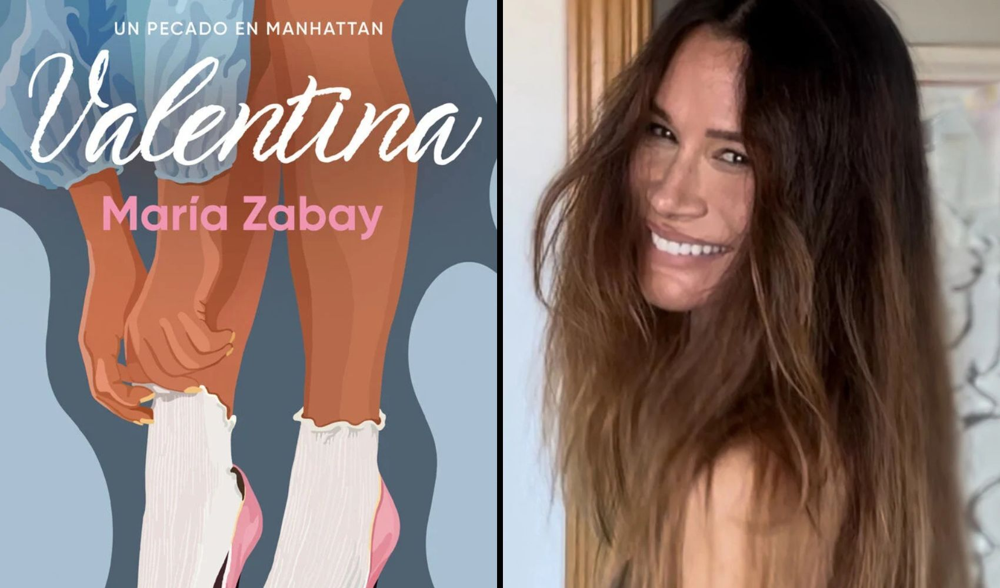
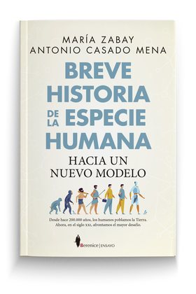

I / Las raíces
Queens
El barrio, las vidas inmigrantes y la mezcla de culturas de la que Valentina se siente parte. Allí aprende a arreglárselas con lo que tiene.
Una pícara en Manhattan
De Queens a Manhattan, Valentina quiere cambiar de vida. ¿A qué está dispuesta a renunciar para conseguirlo?

“Entiendo la literatura como un instrumento de cambio”.
La mirada de la autora
Valentina quiere ser decoradora. De Queens a Manhattan, se abre camino con humor y con el ingenio de quien ha encontrado más de una puerta cerrada. En una ciudad que promete empezar de nuevo, cada oportunidad le plantea una pregunta: ¿qué tendrá que dejar atrás para aprovecharla?
03 / La novela
¿Cómo se empieza de nuevo cuando se parte con todo en contra? Entre el humor y el desencanto, Valentina mira de cerca lo que el deseo de prosperar nos lleva a aceptar y lo que podemos perder por el camino.
I / Las raíces
El barrio, las vidas inmigrantes y la mezcla de culturas de la que Valentina se siente parte. Allí aprende a arreglárselas con lo que tiene.
II / La promesa
Los apartamentos que sueña con decorar y el mundo de quienes dan por hecho que todas las puertas se abren. Llegar hasta allí tiene un precio. Quedarse, también.
04 / En los medios

Mundiario16 mar 20257 publicaciones
05 / La autora
Nacida en Zaragoza, María Zabay es licenciada en Derecho, escritora y periodista. Ha trabajado en prensa, radio y televisión, con etapas como presentadora en TVE, TVE2 y Mediaset y como directora de contenidos en España de Digital TV Group.
Fue directora de comunicación del Ministerio de Industria, Energía y Turismo. Es autora de novelas, relatos y obras de no ficción. Su relato «Manhattan» obtuvo el Premio Literario Válgame Dios de Relato Erótico.
Ha colaborado con medios como The Times, La Gaceta, Cinco Días y La Razón. En OKDIARIO presenta El Foco, un espacio de entrevistas sobre cultura, política, ciencia y pensamiento.
Web oficial ↗
El zapato de la lengua rota

Valentina

La alumna
El contrato

El amor y otros desastres naturales

Aislada

Manhattan

Diosas de papel

Breve historia de la especie humana

Un viaje al éxito

Liderar con la palabra

Todos contra el bullying
07 / Escritores y medios
«Pícara, desvergonzada»
«Valiente, imperfecta y profundamente humana»
«Una novela impactante, sorprenderá»
«Una novela feroz, imposible de dejar»